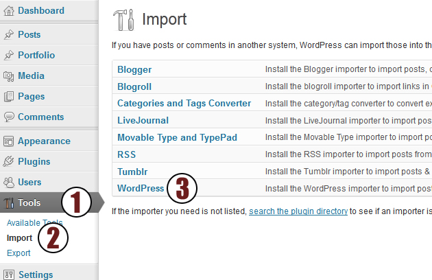
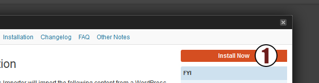
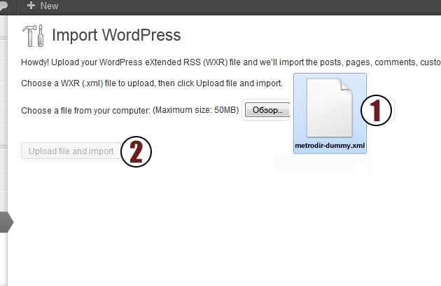
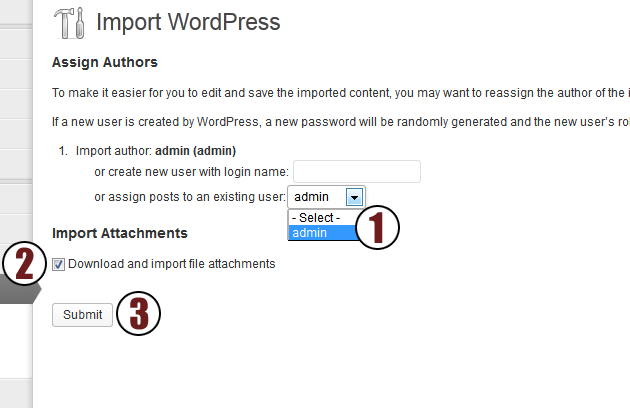
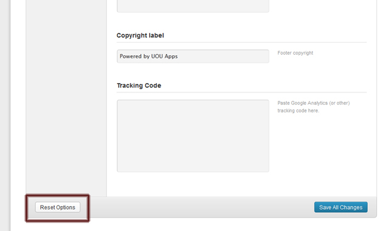
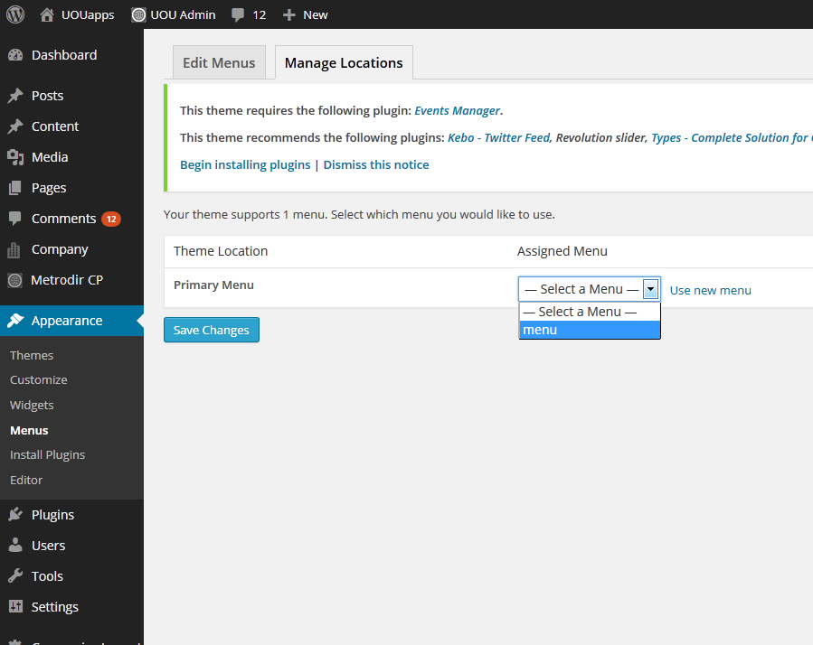
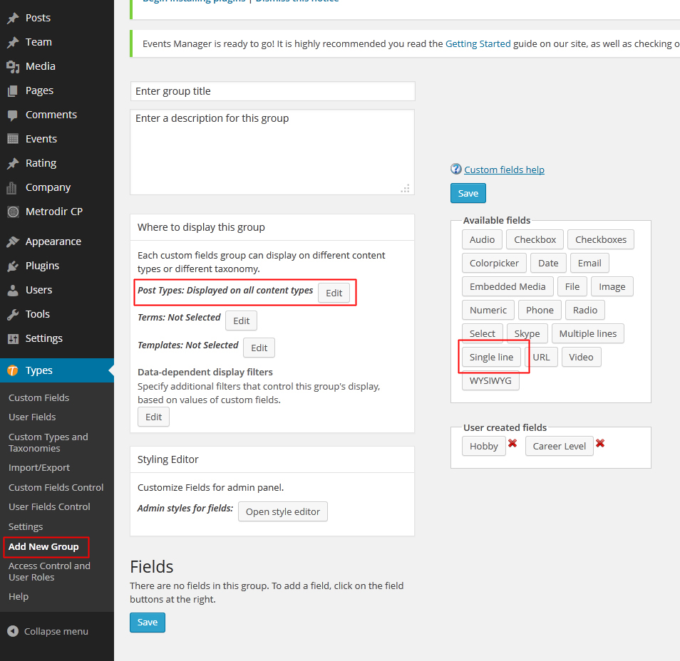
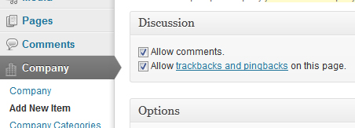
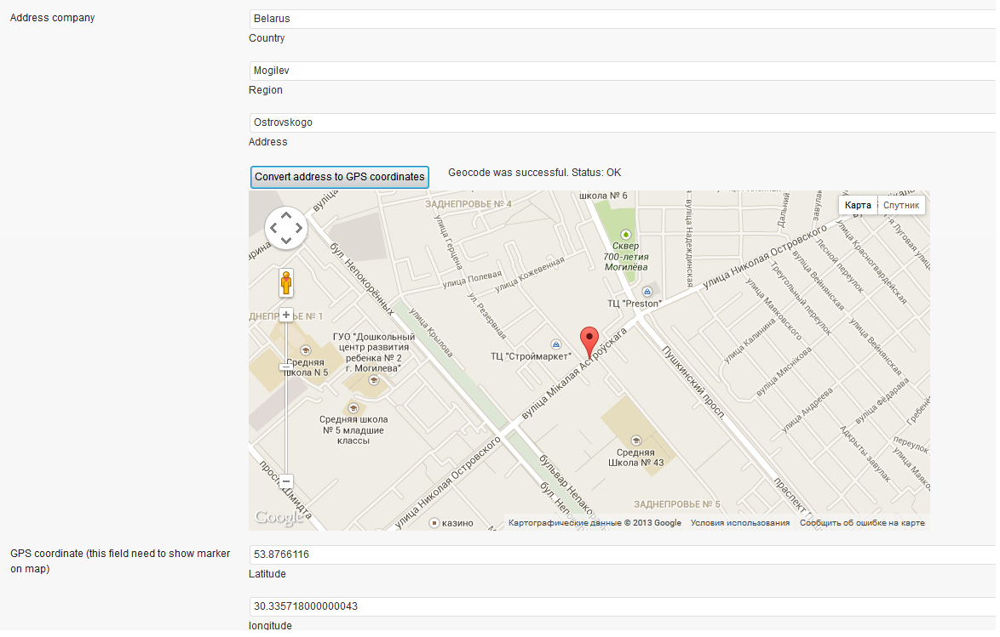
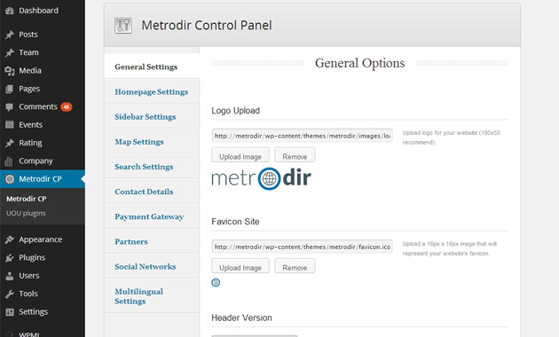

METRODIR is a responsive Directory Template that offers a wide range of features that enables to create a listing of companies and illustrate them per category on a map.
Thank you for purchasing my theme. If you have any questions that are beyond the scope of this help file, please feel free to email via my user page contact form here. Thanks so much!
To install this theme you must have a working version of WordPress already installed.
For information in regard to installing the WordPress platform, please see the WordPress Codex -
When you are ready to install a theme, you must first upload the theme files and then activate the theme itself.
To import dummy content (categorise/page/menu/blog/companies)
A) dummy/metrodir.dummy.xml - go to Tools => Import => WordPress, and set Download attachment.

Install Now and Activate Plugin & Run Importer



To import metrodir default settings (view/social/logo/banners/maps/search/)
Go to - Appearance - METRODIR CP
And click: Reset options

| Title | Template |
|---|---|
Home |
home |
Submit listing |
submit listing |
Companies |
company |
Sample Page |
sample Page |
Blog |
blog |
About us |
about us |
Contact us |
contact us |
| ZIP plugin | Description |
|---|---|
revslider.zip |
Create a responsive(mobile friendly) or fullwidth slider with must-see-effects and meanwhile keep or build your SEO optimization (all content always readable for search engines). See the heaps of custom transitions/animations for each object on the page! Customize this slider with our convenient drag&drop backend to your very needs. This plugin features tons of unique transition effects, an image preloader, video embedding, autoplay that stops on user interaction and lots of easy to set options to create your own effects. |
| Name | Color | Icon | Marker |
|---|---|---|---|
Advertising |
|
|
|
Airport |
|
|
|
Cars |
|
|
|
Education |
|
|
|
Entertainment |
|
|
|
Garden |
|
|
|
Industry |
|
|
|
Libraries |
|
|
|
Mechanic |
|
|
|
Offices |
|
|
|
Postal |
|
|
|
Realestate |
|
|
|
Restaurant |
|
|
|
Shop |
|
|
|
Sport |
|
|
- go to Appearance => Menus => Manage Locations, and select menu for "Primary Menu" .

To register users, you will need activate "Anyone can register" options (Go to Settings => General => set checkbox Membership)
And configure PayPal API settings (Go to METRODIR CP)
For use paypal gateway you need check checkbox "Activate PayPal system", otherwise user has been register free without payment.
SandBox (virtual) - this test sanbox paypal site (developer.paypal.com)
Live (real) - Real payment by PayPal, you need Business account
*Read this tutorial "how to get paypal API info".
- Latest News:
\wp-content\themes\metrodir\include\html\frame-sidebar.php - LINE: 48-70 html block
- Globe template:
\wp-content\themes\metrodir\include\html\frame-welcome.php - LINE: 13-46 html block
- Flickr and Tweets:
\wp-content\themes\metrodir\footer.php - LINE: 16-19 tweeter block, LINE: 45-48 Flickr block
Side bar is located to the right on the blog pages and is displayed on search pages, blog entries, and on a specific post. In this panel it is possible to add plug-ins installed on WordPress.
For example to display the latest tweets use Newest Twitter Widget, after installation adjust setting according to documentation of the widget.
You can also post any HTML code in the sidebar that is executed on the page.
For example to display the latest tweets go to account settings https://twitter.com/settings/widgets and create widget for you website, this will generate the code that you can paste in the sidebar.
In order to adjust the output latest tweets insert in the file /wp-content/themes/metrodir/include/php/twitter.php HTML code to generate go to account settings https://twitter.com/settings/widgets and create widget for you website, this will generate the code that you can paste in the twitter.php
Or install recomended plugin Kebo Twitter Feed and in METRODIR CP activate footer widget options, and go to Appearance - Widget and set Kebo widget at footer area.
In order to adjust the output Flickr feed, go to METRODIR CP -> Social settings and set your Flickr ID
To add additional fields and custom field to advanced search (also if you use a plug-in Types) go to METRODIR CP - Search and set needed Additional fields.
Install and activate Types plugin.
Add New Group
Set Post Types and add single line.
For add Types Fields to search, After adding go to METRODIR CP - Search and set necessary field.
To add a new company to directory companies go to Company > Add New Item.
After adding At least one of the newly created category, the category is active and the add to the markers on the map.
You can add your company to several categories.
In order to open the possibility of comments, you need to activate checkbox at Discussion block:

Company address automatical set by drag marker on map

To add a new blog post go to Posts > Add New.
To add a new sample page go to Pages > Add New. And set template Sample page
Possible to create pages with pictures and use WYSIWYG-wordpress editor.
Directory management METRODIR necessary go to Appearance > METRODIR CP

Boxed version:
In order to use boxed version site check YES or NO checkbox.
Home view:
In order to use on home-page map or revolution slider (supplied with a template \wp-content\themes\glocal\plugins).
Centre home map:
You can choose several options for centering the map.
Custom Favicon:
You can upload your own custom favicon. A favicon.ico is the icon that get displayed in the address bar of every browser.
Contact:
You can configure your contact form to send mails via mail().
Don’t forget to press “SAVE CHANGES” after modifications.
1. In Company import section select columns
2. Generate sample CSV file
3. Add your own parameters in columns by separate delimiter options
*follow CSV description for adding parameters to CSV
4. Choose CSV file and click on "import companies from CSV"
*recommended not to import large files (for stable operation is recommended to split a large file into small)
1. In Category import section select columns
2. Generate sample CSV file
3. Add your own parameters in columns by separate delimiter options
*follow CSV description for adding parameters to CSV
4. Choose CSV file and click on "import categories from CSV"
*recommended not to import large files (for stable operation is recommended to split a large file into small)
style.css - main styles of the template including responsive styles
flexslider.css - styles from revslider plugin.
styles-ie8-and-down.css - reset stylesheet to reduce browser inconsistencies in things like default line heights, margins and font sizes of headings, and so on.
jquery-selectbox.css and jquery-ui-1.10.3.custom.min.css – styles specific to jQuery
responsive.css and responsive-grid.css – responsive styles
font-awesome.css – Icon Font
color.css, less.css – Color Options
color-first.css, color-second.css, color-third.css, color-fourth.css – Colors for demo witget
scripts.js.js – main custom scripts for the template
ajax_search.js - scripts for ajax simple search on map
jflickrfeed.min.js - flickr bottom feed scripts
jquery.colorbox-min.js - A lightweight customizable lightbox plugin for jQuery
jquery.flexslider-min.js - scripts specific revslider plugin
jquery.gmap.min.js and jquery.gomap-1.3.2.min - jQuery plugin that helps to embed Google Maps into website. More information can be found at http://labs.mario.ec/jquery-gmap/
jquery.isotope.min.js - an exquisite jQuery plugin for magical layouts. More information can be found at http://isotope.metafizzy.co/
jquery.mobilemenu.min.js - responsive scripts create menu on mobile devices
jquery.placeholder.min.js - support library from Internet Explrer fix
jquery.selectbox-0.6.1.js - support library from customization select element
jquery-1.10.1.min.js - jQuery is a fast, small, and feature-rich JavaScript library. It makes things like HTML document traversal and manipulation, event handling, animation, and Ajax much simpler with an easy-to-use API that works across a multitude of browsers.. More information can be found at http://jquery.com/
superfish.js - jQuery library from custom navigation menu
map.js - jQuery File for load map.
markerclusterer.js - jQuery library for Markers Clusters.